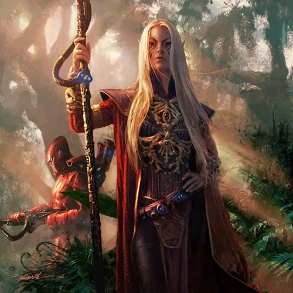

les Psykers

Psyker
Le psyker impérial se tient aux côtés du commissaire, attendant le signal. Alors qu’il tend les mains vers l’avant, des décharges électriques crépitent sur tout son corps, culminant au bout de ses doigts, et déciment les ennemis devant lui grâce à la puissance du Warp. Un Eldar pose ses mains sur ses alliés tombés au combat, refermant leurs blessures et les remettant en état de combattre. Un prêtre électro invoque la puissance des machines, provoquant une décharge électrique qui jaillit et encercle ses ennemis tandis qu’ils hurlent de douleur.
Les psioniques manifestent la puissance du Warp pour alimenter leurs effets, chacun à sa manière. Chaque psionique possède sa propre discipline unique dans laquelle il peut s’entraîner, et peut même développer des façons totalement originales de manifester ses capacités.
Création Rapide
Vous pouvez créer rapidement un psyker en suivant ces suggestions. Tout d’abord, faites en sorte que la Sagesse ou le Charisme soit votre modificateur de capacité le plus élevé. Votre deuxième score le plus élevé devrait être la Dextérité ou la Constitution. Ensuite, choisissez le parcours « érudit ».
Bonus de classe
En tant que Psyker, vous bénéficiez des caractéristiques de classe suivantes :
Points de vie
Dés de vie : 1d6 par niveau de Psyker
Points de vie au niveau 1 : 6 + votre modificateur de Constitution
Points de vie aux niveaux supérieurs : 1d6 (ou 4) + votre modificateur de Constitution par niveau de Psyker après le niveau 1
Compétences de départ
Vous maîtrisez les objets suivants, en plus des compétences fournies par votre espèce ou votre historique.
Armures : armure légère
Armes : armes simples
Outils : aucun
Jets de sauvegarde : Sagesse, Charisme
Compétences : choisissez-en deux parmi Connaissances, Intimidation, Investigation, Nature, Occultisme, Perspicacité, Persuasion, Représentation et Tromperie.
Équipement de départ
Vous commencez avec les objets suivants, auxquels s’ajoutent ceux fournis par votre historique :
- (a) une carabine laser et 2 cellules d’énergie ou (b) n’importe quelle arme simple
- (a) un paquetage de ruines, (b) un paquetage d’explorateur ou (c) un paquetage d’érudit
- Une armure en mailles et deux dagues
Aptitudes du Psyker
Lancement de sorts Psychique
Vous avez acquis la capacité de canaliser l’Immaterium pour alimenter vos pouvoirs psychiques. Reportez-vous au chapitre XX pour les règles générales relatives à l’utilisation des pouvoirs et au chapitre XX pour la liste des pouvoirs psychiques.
Pouvoirs psychiques connus
Vous apprenez 5 pouvoirs psychiques de votre choix, et vous en apprenez d’autres à mesure que vous progressez en niveau, comme indiqué dans la colonne « Pouvoirs psychiques connus » du tableau de l’Exorciste. Vous ne pouvez pas apprendre de pouvoir psychique d’un niveau supérieur à votre niveau de pouvoir maximal.
Points de pouvoir psychique
Vous disposez d’un nombre de points psioniques égal à votre niveau d’exorciste multiplié par 2, comme indiqué dans la colonne « Points psioniques » du tableau des exorcistes. Lorsque vous lancez un pouvoir, vous dépensez un nombre de points psioniques égal à 1 + le niveau du pouvoir. Vous récupérez tous les points psioniques dépensés à la fin d’un long repos.
Niveau de pouvoir maximal
De nombreux pouvoirs psychiques peuvent être surpuissants, consommant davantage de points psioniques pour produire un effet plus important. Vous pouvez rendre ces capacités surpuissantes jusqu’à un niveau maximal, qui augmente à mesure que vous progressez en niveau, comme indiqué dans la colonne « Niveau maximal du pouvoir » du tableau de l’exorciste.
Vous ne pouvez lancer des pouvoirs psychiques de niveau 6, 7, 8 et 9 qu’une seule fois. Vous retrouvez la capacité de le faire après un long repos.
Capacité de lancement psychique
Votre capacité de lancement de pouvoirs psychiques est le score de capacité que vous utilisez pour lancer des pouvoirs psychiques. Votre capacité de lancement de pouvoirs psychiques peut être soit la Sagesse, soit le Charisme (à votre choix). Ce choix doit être fait à la création du personnage et ne peux plus être modifié. Vous utilisez ce modificateur de score de capacité chaque fois qu’un pouvoir fait référence à votre capacité de lancement de pouvoirs psychiques. De plus, vous utilisez ce modificateur de score de capacité lorsque vous déterminez le DD de jet de sauvegarde d’un pouvoir psychique que vous lancez et lorsque vous effectuez un jet d’attaque avec celui-ci.
- DC de sauvegarde psychique = 8 + votre bonus de compétence + votre modificateur de lanceur de sort Psychique
- Modificateur d’attaque psychique = votre bonus de compétence + votre modificateur de lanceur de sort Psychique
Les aptitudes du Psyker
| Niveau | Bonus de Maîtrise | Aptitudes | Nombre de pouvoir psychique connu | Nombre de point de pouvoir psychique | Niveau maximal des pouvoir psychique |
|---|---|---|---|---|---|
| 1 | +2 | Lancement de sorts psychiques, Récupération de puissance | 9 | 4 | 1 |
| 2 | +2 | Lancement de sorts renforcé par le Warp, Barrière télékinétique | 11 | 8 | 1 |
| 3 | +2 | Discipline psychique | 13 | 12 | 2 |
| 4 | +2 | Amélioration des caractéristiques | 15 | 16 | 2 |
| 5 | +3 | -- | 17 | 20 | 3 |
| 6 | +3 | Amélioration de la Discipline psychique | 19 | 24 | 3 |
| 7 | +3 | -- | 21 | 28 | 4 |
| 8 | +3 | Amélioration des caractéristiques | 23 | 32 | 4 |
| 9 | +4 | -- | 25 | 36 | 5 |
| 10 | +4 | Lancement de sorts renforcé par le Warp (3 options) | 26 | 40 | 5 |
| 11 | +4 | -- | 28 | 44 | 6 |
| 12 | +4 | Amélioration des caractéristiques | 29 | 48 | 6 |
| 13 | +5 | -- | 31 | 52 | 7 |
| 14 | +5 | Amélioration de la Discipline psychique | 32 | 56 | 7 |
| 15 | +5 | -- | 34 | 60 | 8 |
| 16 | +5 | Amélioration des caractéristiques | 35 | 64 | 8 |
| 17 | +6 | Lancement de sorts renforcé par le Warp (4 options) | 37 | 68 | 9 |
| 18 | +6 | Amélioration de la Discipline psychique | 38 | 72 | 9 |
| 19 | +6 | Amélioration des caractéristiques | 39 | 76 | 9 |
| 20 | +6 | Maîtrise psychique | 40 | 80 | 9 |
Récupération d'énergie
Dès le niveau 1, vous avez appris à récupérer une partie de votre énergie en méditant brièvement. À la fin d'un repos court, vous pouvez récupérer un nombre de points psioniques égal à la moitié de votre niveau de psyker (arrondi à l'unité inférieure) + votre modificateur de lanceur de sort psychique. Une fois que vous avez utilisé cette capacité, vous devez effectuer un repos long avant de pouvoir l'utiliser à nouveau.
Lancement de sorts renforcé par le Warp
À partir du niveau 2, vous acquérez la capacité de manipuler le Warp à votre guise. Lorsque vous lancez un pouvoir psychique, vous pouvez dépenser des points de psyker supplémentaires pour modifier ce pouvoir. Vous choisissez trois des options de « Lancement de pouvoirs renforcé par le Warp » suivantes. Vous en obtenez une autre aux niveaux 9 et 17.
Pouvoir prudent. Lorsque vous lancez un pouvoir qui oblige d’autres créatures à effectuer un jet de sauvegarde, vous pouvez protéger certaines d’entre elles de la pleine puissance de ce pouvoir. Pour ce faire, vous dépensez 1 point de pouvoir psychique et choisissez un nombre de ces créatures égal ou inférieur à votre modificateur de lanceur de sort de psychique (avec un minimum d’une créature). Une créature choisie réussit automatiquement son jet de sauvegarde contre ce pouvoir.
Pouvoir à distance. Lorsque vous lancez un pouvoir dont la portée est de 5 pieds ou plus, vous pouvez dépenser 1 point de pouvoir psychique supplémentaire pour doubler la portée du pouvoir. Lorsque vous lancez un pouvoir dont la portée est « au toucher », vous pouvez dépenser 1 point de pouvoir psychique supplémentaire pour porter la portée du pouvoir à 9 mètres pieds.
Pouvoir prolongé. Lorsque vous lancez un pouvoir dont la durée est de 1 minute ou plus, vous pouvez dépenser 1 point de pouvoir psychique pour doubler sa durée, jusqu’à une durée maximale de 24 heures.
Pouvoir renforcé. Lorsque vous lancez un pouvoir qui oblige une créature à effectuer un jet de sauvegarde pour résister à ses effets, vous pouvez dépenser 3 points de pouvoir psychique pour conférer à une cible du pouvoir le désavantage lors de son premier jet de sauvegarde effectué contre ce pouvoir.
Pouvoir amélioré. Lorsque vous lancez les dés de dégâts pour un pouvoir, vous pouvez dépenser 1 point de pouvoir psychique supplémentaire pour relancer un nombre de dés de dégâts égal à votre modificateur de lanceur de pouvoir psychique (minimum d’un). Vous devez utiliser les nouveaux résultats. Vous pouvez utiliser le Pouvoir amélioré même si vous avez déjà utilisé une autre option de « Lancement renforcé par le Warp » lors du lancement du pouvoir.
Pouvoir accéléré. Lorsque vous lancez un pouvoir dont le temps d’incantation est de 1 action, vous pouvez dépenser 2 points de pouvoir psychique pour ramener ce temps d’incantation à 1 action bonus pour ce lancement.
Pouvoir de rattrapage. Si vous ratez un pouvoir psychique nécessitant un jet d’attaque, vous pouvez dépenser 2 points de pouvoir psychique pour relancer le jet d’attaque. Vous devez utiliser le nouveau résultat. Vous pouvez utiliser le pouvoir « Recherche » même si vous avez déjà utilisé une autre option de lancement renforcé par la Force lors du lancement du pouvoir.
Pouvoir jumelé. Lorsque vous lancez un pouvoir qui ne cible qu’une seule créature et qui n’a pas une portée « soi-même », vous pouvez dépenser un nombre de points psioniques égal au niveau du pouvoir pour cibler une deuxième créature à portée avec le même pouvoir (1 point pouvoir psychique s’il s’agit d’un pouvoir à volonté). Pour être éligible, un pouvoir doit être incapable de cibler plus d’une créature à son niveau actuel. Par exemple, « Rayon brûlant » n’est pas éligible, mais « Rayon de givre » l’est.
Barrière télékinétique
À partir du niveau 2, vous pouvez invoquer une barrière télékinétique d’énergie psychique pour repousser les attaques. Lorsque vous êtes touché par une attaque, vous pouvez utiliser votre réaction pour créer une barrière d’énergie psychique. Jusqu’au début de votre prochain tour, vous bénéficiez d’un bonus à votre CA égal à votre modificateur de lanceur de pouvoir psychique (minimum de +1). Cela inclut l’attaque qui a déclenché l’effet.
Vous pouvez utiliser cette capacité un nombre de fois égal à votre bonus de compétence, comme indiqué dans le tableau « Psyker ». Vous récupérez tous les usages dépensés à la fin d’un long repos.
Discipline psychique
À partir du niveau 3, vous commencez un entraînement spécialisé dans une discipline psychique de votre choix.
Votre choix vous confère des capacités lorsque vous le sélectionnez au niveau 3, puis à nouveau aux niveaux 6, 14 et 18.
Amélioration des caractéristiques
Lorsque vous atteignez le niveau 4, puis à nouveau aux niveaux 8, 12, 16 et 19, vous pouvez choisir parmis les modifications suivantes :
- Augmenter de 2 points une caractéristique de votre choix
- Augmenter d’un point deux caractéristiques de votre choix
- Choisir un Don
Comme d’habitude, si vous choisissez d'augmenter vos caractéristiques, vous ne pouvez pas le faire au-delà de 20 via de cette capacité.
Maîtrise psychique
Au niveau 20, votre harmonisation avec l’Immaterium est devenue absolue. Vous maîtrisez désormais deux pouvoirs psychiques et pouvez les lancer sans grand effort. Choisissez deux pouvoirs psychiques de niveau 3 que vous connaissez comme pouvoirs maîtrisés. Vous pouvez lancer chacun de ces pouvoirs une fois en tant que pouvoirs de niveau 3 sans dépenser de points de points de pouvoir psychique. Une fois que vous avez lancé un pouvoir maîtrisé de cette manière, vous ne pouvez plus le relancer tant que vous n’avez pas effectué un repos court ou long.
Si vous souhaitez le lancer à un niveau supérieur, vous devez dépenser des points de points de pouvoir psychique comme d’habitude.
Disciplines psychiques
Après avoir accumulé suffisamment de pouvoir, un psyker peut se consacrer à une discipline psychique afin d’affiner ses talents. Ces disciplines définissent les principaux atouts d’un psyker et peuvent même servir à gagner les faveurs de certaines factions.
Biomancie
La discipline de la biomancie se concentre sur le corps et consiste à utiliser des pouvoirs psychiques pour influencer les caractéristiques physiques de son propre corps.
Corps marionnette
Au niveau 3, lorsque vous choisissez cette discipline, vous pouvez contrôler la circulation sanguine et les muscles d’une créature. En tant qu’action bonus, vous ciblez une créature de taille Grande ou inférieure qui possède du sang ou des muscles à moins de 18 mètres de vous. Cette créature doit réussir un jet de sauvegarde de Constitution contre votre DD de sauvegarde psychique, sinon elle se déplace immédiatement jusqu’à la moitié de sa distance de déplacement dans la direction de votre choix et effectue une seule attaque à l’arme contre une créature de votre choix se trouvant à portée. Les créatures mortes ou inconscientes échouent automatiquement à leur jet de sauvegarde.
Vous pouvez utiliser cette capacité un nombre de fois égal à votre bonus de compétence, et vous récupérez tous les usages dépensés lorsque vous terminez un long repos.
Points de suture psychiques
À partir du niveau 3, vous acquérez la capacité de recoudre les blessures. Lorsque vous lancez un pouvoir psychique qui restaure des points de vie, vous pouvez relancer tout résultat de 1 ou 2 obtenu au dé, en acceptant le nouveau résultat.
Cristallisation du sang
Au niveau 6, vous pouvez faire cristalliser le sang dès qu’il s’écoule de la blessure, infligeant ainsi des dégâts à l’attaquant. En réaction à une créature dont le sang se trouve à moins de 18 mètres de vous et qui subit des dégâts, vous pouvez faire subir à l’attaquant des dégâts perforants égaux à 1d6 + votre modificateur de lanceur de sort psychique.
Au niveau 14, cela inflige 2d6 dégâts perforants supplémentaires.
Vous pouvez utiliser cette capacité un nombre de fois égal à votre modificateur de lanceur de sort psychique, et vous récupérez tous les usages dépensés à la fin d’un long repos.
Veines éclatées
Au niveau 17, en tant qu’action, vous pouvez émettre une puissante aura qui s’étend jusqu’à 18 mètres pieds autour de vous. Cette aura fait circuler de l’énergie nécrotique dans les veines des ennemis proches, provoquant leur éclatement et leur hémorragie.
Pendant 1 minute, toute créature hostile dotée de sang qui commence son tour à l’intérieur de l’aura ou qui y pénètre pour la première fois au cours de son tour subit immédiatement 2d6 points de dégâts nécrotiques. Toute créature hostile dotée de sang qui devrait regagner des points de vie alors qu’elle se trouve dans l’aura ne regagne que la moitié du nombre de points de vie prévu.
Une fois que vous avez utilisé cette capacité, vous ne pouvez pas l’utiliser à nouveau avant d’avoir terminé un long repos.
Technomancie
L’art de la technomancie est pratiqué par les psykers du Culte du Mechanicum, également connus sous le nom d’électro-prêtres. D’autres psykers qui pratiquent la technomancie travaillent souvent en étroite collaboration avec la technologie, et même le Mechanicum Noir possède ses propres électro-prêtres. Ceux qui pratiquent cet art ont la capacité de manipuler les machines grâce à leurs pouvoirs psychiques.
Ne faire qu’un avec l’électricité
À partir du niveau 3, lorsque vous choisissez cette discipline, vous gagnez une résistance aux dégâts de foudre.
Impulsion de court-circuit
Toujours au niveau 3, vous acquérez la capacité de rendre psychiquement inopérants les appareils électroniques. En tant qu’action, vous pouvez cibler un appareil électronique à portée qui n’est pas un artefact, provoquant son arrêt. Si l’appareil est tenu ou utilisé par une créature, celle-ci doit réussir un jet de sauvegarde d’Intelligence pour empêcher l’arrêt de l’appareil. Jusqu’à la fin de votre prochain tour, l’appareil ne peut pas être mis en marche ni redémarré tant que l’appareil ciblé se trouve à portée.
Vous pouvez utiliser cette capacité un nombre de fois égal à votre bonus de compétence, et vous récupérez tous les usages dépensés lorsque vous effectuez un long repos.
Déplacement par câble
Au niveau 6, vous acquérez la capacité de vous déplacer psychiquement sur de courtes distances via des câbles électriques, tels que des lignes de données, des câbles d’alimentation et des lignes téléphoniques. En tant qu’action bonus, vous pouvez toucher un appareil ou une prise reliée à un réseau câblé et vous téléporter le long de ce réseau vers un autre appareil ou une autre prise situé(e) dans votre champ de vision, jusqu’à une distance maximale de 1,5 kilomètre, pour atterrir dans l’espace inoccupé le plus proche de l’emplacement ciblé.
Une fois que vous avez utilisé cette capacité, vous ne pouvez pas l’utiliser à nouveau avant d’avoir effectué un repos court ou long.
Réseau sensoriel
Au niveau 14, lorsque vous touchez un appareil électronique, un câble ou une prise, vous pouvez détecter par télépathie, dans un rayon de 90 mètres, toutes les connexions câblées que cet appareil a établies. Cela vous permet de connaître l’emplacement précis et la direction de toutes ces connexions, mais pas nécessairement à quoi elles sont reliées, ni ce qui se trouve à l’endroit où elles sont connectées. Par exemple, vous pouvez détecter qu’un ordinateur est branché à une prise située à 30 mètres au nord-ouest, mais pas que la pièce située à 30 mètres au nord-ouest est une salle de surveillance.
De plus, votre capacité « Déplacement par câble » peut vous téléporter, ainsi que jusqu’à cinq créatures de votre choix situées à moins de 1,5 mètre de vous, le long de câbles électroniques ; vous pouvez également vous téléporter vers des emplacements que vous percevez grâce à cette capacité, ce qui vous téléporte, vous et les créatures qui vous accompagnent, vers l’espace inoccupé le plus proche situé à l’extrémité de la connexion.
Malédiction des esprits des machines
Au niveau 18, vous pouvez désactiver des technologies à votre guise. Choisissez jusqu’à cinq objets ou appareils situés à moins de 18 mètres de vous, que vous pouvez voir et qui ne sont pas des artefacts. Pendant 1 heure, ces objets perdent tous leurs avantages améliorés et sont mis hors service. Ils ne peuvent être redémarrés ni remis en marche pendant ce laps de temps, mais une créature peut tenter de redémarrer l’appareil en utilisant son action pour effectuer un test d’Intelligence contre votre DD de sauvegarde psychique ; en cas de réussite, l’appareil est activé.
Une fois que vous avez utilisé cette capacité, vous ne pouvez pas l’utiliser à nouveau avant d’avoir effectué un long repos.